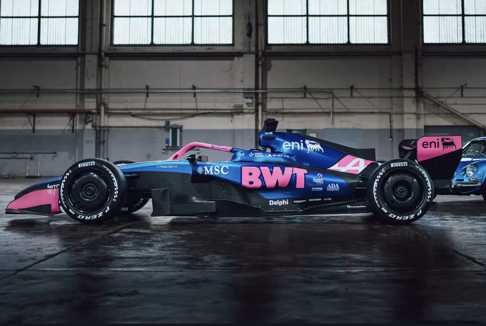
With its chassis base in Enstone, UK, and engine department in Viry-Châtillon, France, Alpine is now under the management of Team Principal Flavio Briatore. The team has moved to a Mercedes power unit for 2026, driven by Pierre Gasly and Franco Colapinto. Their 2025 season was a difficult one characterized by technical reshuffling, resulting in a last-place finish in the Constructors' Championship that prompted the radical shift to becoming a Mercedes customer team.
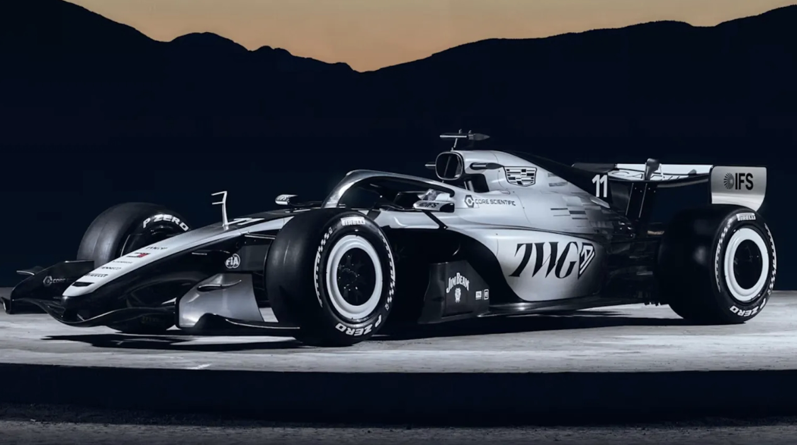
The newest addition to the grid, the Andretti-backed Cadillac team is based in Fishers, Indiana, USA, with a primary satellite facility in Silverstone, UK. The team is led by Team Principal Graeme Lowdon, with a driver lineup featuring Sergio Pérez and Valtteri Bottas. As a true 11th team for 2026, they enter with no "last season" performance data, making them the ultimate wildcard as they debut with Ferrari-supplied power units.
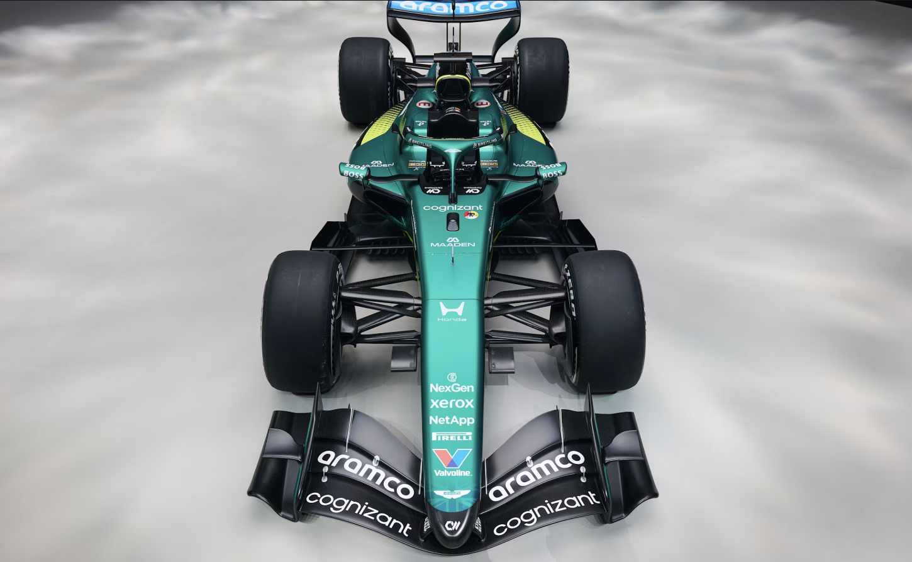
Based in its state-of-the-art facility in Silverstone, UK, Aston Martin enters 2026 with legendary designer Adrian Newey as Team Principal. The team’s drivers are the veteran Fernando Alonso and Lance Stroll. Their 2025 campaign was a year of heavy investment and infrastructure building, finishing in the upper midfield while focusing their resources on the transition to becoming the works partner for the new Honda power units.
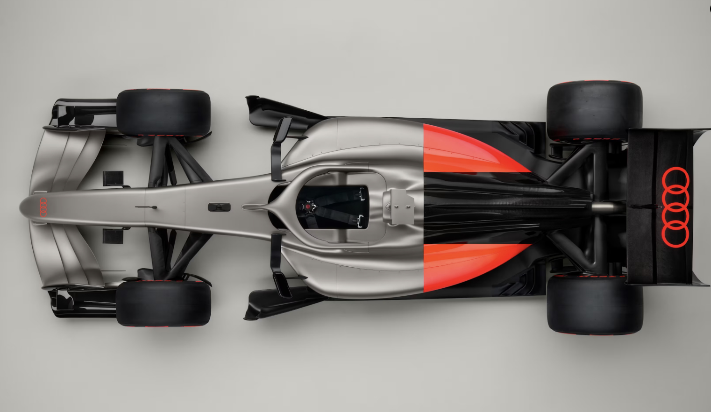
Formally taking over the Sauber entry, Audi is based in Hinwil, Switzerland, with power unit development in Neuburg, Germany. The project is led by Mattia Binotto, who serves as Team Principal. The inaugural driver lineup consists of Nico Hülkenberg and rookie talent Gabriel Bortoleto. In their final year as Sauber in 2025, the team focused almost entirely on the Audi transition, finishing toward the back of the pack while preparing for this official works entry.
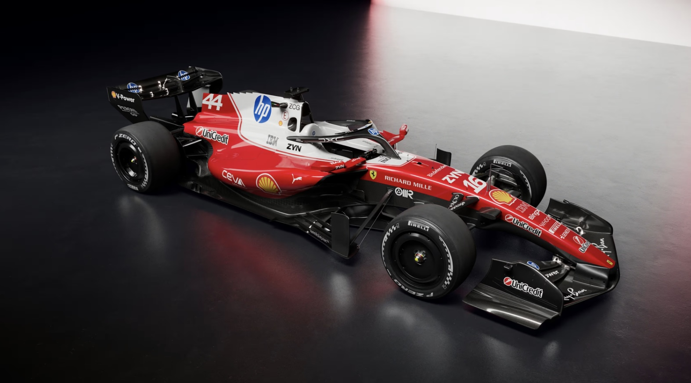
Based in its historic home of Maranello, Italy, the Prancing Horse remains under the leadership of Team Principal Fred Vasseur. The 2026 lineup features seven-time champion Lewis Hamilton alongside Charles Leclerc. Ferrari enjoyed a resurgent 2025, securing several wins and pushing for the title, ultimately finishing as a top contender and carrying that momentum into the new era of regulations.
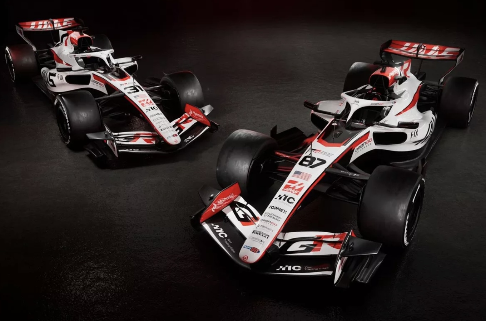
Based in Kannapolis, USA, with a design office in Italy, Haas is led by Ayao Komatsu. The team fields an exciting duo of Esteban Ocon and Oliver Bearman. Haas surprised many in 2025 by securing consistent points and finishing firmly in the midfield, largely thanks to Bearman’s impressive performances as a rookie which helped propel the American outfit forward.
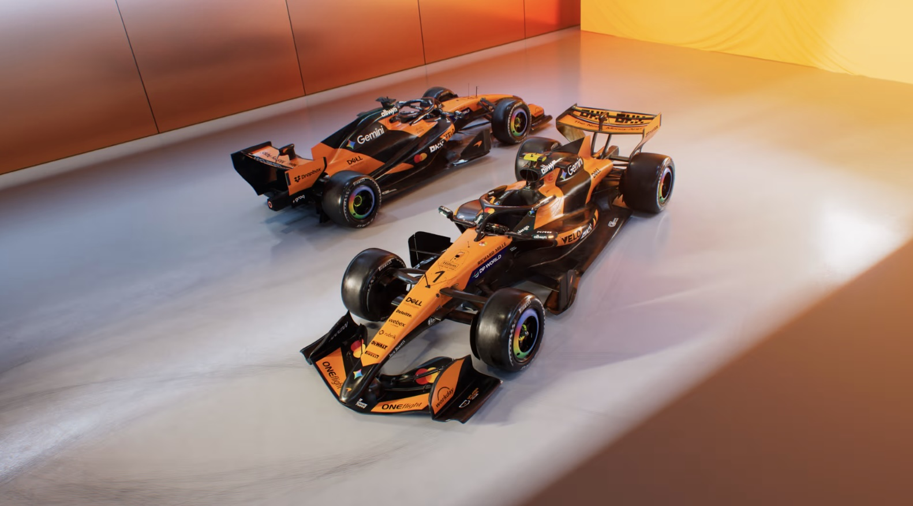
McLaren remains headquartered at the MTC in Woking, UK, with Andrea Stella continuing his successful tenure as Team Principal. The team maintains stability in its driver pairing with Lando Norris and Oscar Piastri. Following a spectacular 2025 season where they frequently challenged for race wins and led the championship at various stages, McLaren enters 2026 as one of the most operationally efficient teams on the grid.
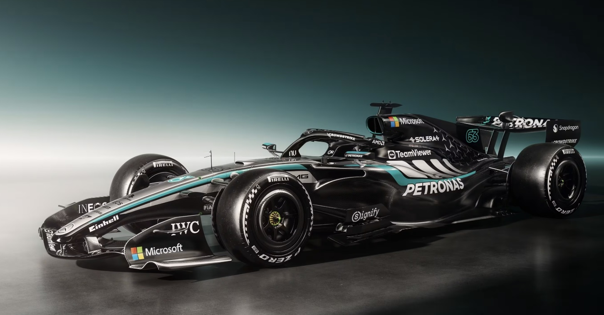
Operating from Brackley, UK, the Silver Arrows are still headed by Toto Wolff. The team enters 2026 with George Russell and young sensation Andrea Kimi Antonelli behind the wheel. After several seasons of fluctuating performance, Mercedes showed a significant return to form in 2025, finishing 2nd in the standings and positioning themselves as early favorites for the 2026 power unit shift.
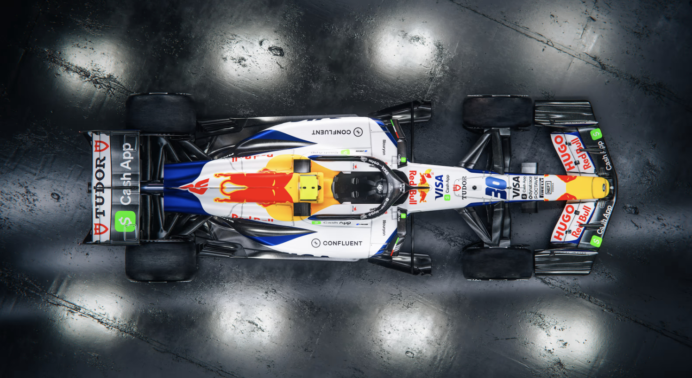
The Red Bull "sister team" continues to operate out of Faenza, Italy, and its UK headquarters in Milton Keynes. Managed under the Red Bull corporate umbrella, the team focuses on young talent with a lineup of Liam Lawson and Arvid Lindblad. Their 2025 performance was a steady midfield effort, serving as a vital testing ground for the upcoming Red Bull Ford technology.
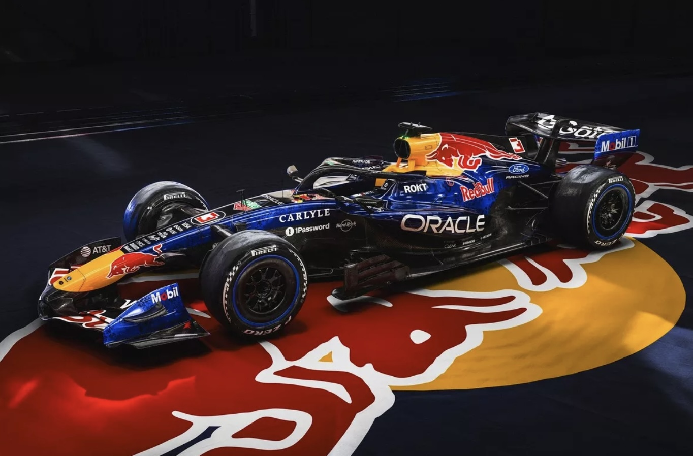
Red Bull continues to operate out of its technology campus in Milton Keynes, UK. Following the high-profile departure of Christian Horner, the team is now led by Team Principal Laurent Mekies. The cockpit features four-time champion Max Verstappen alongside Isack Hadjar. After a dominant era, the team finished 3rd in the 2025 Constructors' Championship, having navigated a year of significant internal restructuring and technical preparation for their new Ford partnership.
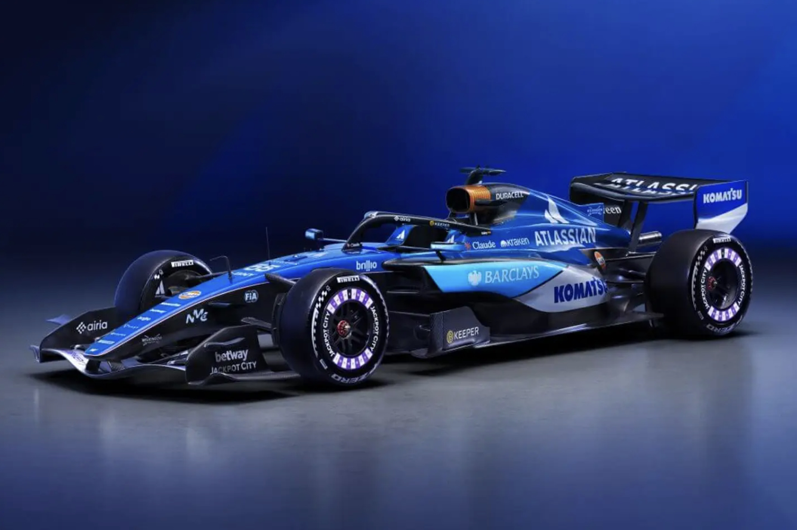
Operating out of Grove, UK, Williams is led by Team Principal James Vowles, who has spearheaded the team's modern revival. The 2026 lineup features Carlos Sainz and Alex Albon, one of the most experienced pairings on the grid. Williams had a standout 2025, finishing 5th in the Constructors' Championship—their best result in a decade—establishing themselves as a serious threat to the front-runners.